Theme Toggler - [Context API]
Aqui vamos criar os componentes filhos que vão receber o contexto do Provider.
Pra exemplificar vamos criar um Componente chamado ThemeTogglerButtom que será responsável por trocar o tema da página.
- Criando as pastas e arquivos do componente dentro da src:
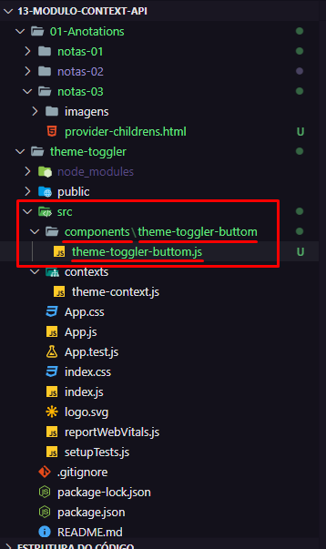
- Criando a casca do componente:
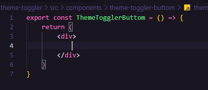
- Passando as informações do Contexto (os temas) pra dentro dos Componentes Filhos (ThemeTogglerButtom):
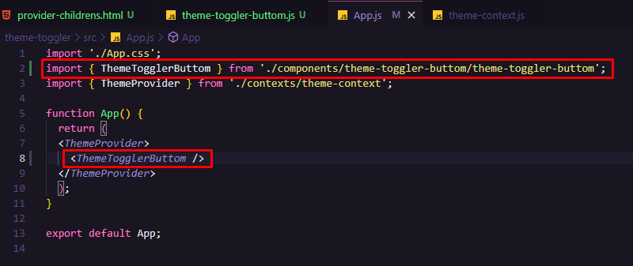
NOTA: Tudo que for colocado dentro do ThemeProvider vai ser enviado pro ThemeContext.js, vai ser injetado através do children e vai ter acesso às informações através do Value={{themes}}.
- Acessando as informações dos Componentes Filhos:
Criando um Hook novo:
- desestruturando o que está vindo do Value (um objeto de Temas):
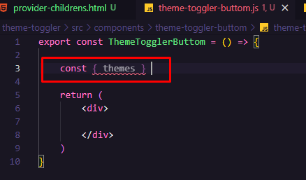
- passando um Hook novo (useContext()) pra ter acesso ao contexto:
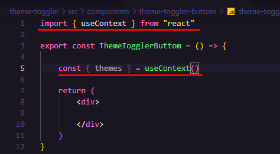
- esse (useContext()) precisa saber qual é o contexto que quer acessar:
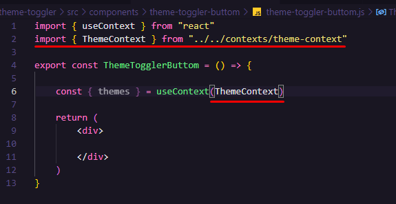
- pronto, agora temos a propriedade Themes dentro de um Componente Filho.
Observe que nada foi passado pras Props do componente, mas, mesmo assim, o Componente Filho (ThemeTogglerButtom) recebe as propriedades declaradas anteriormente (themes):
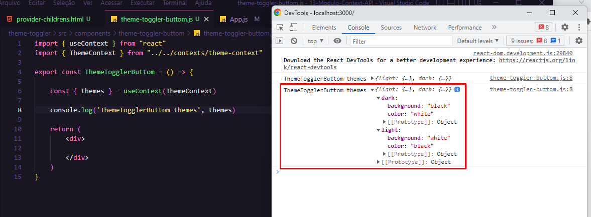
- Criando um novo componente de botão dentro do ThemeTogglerButtom:
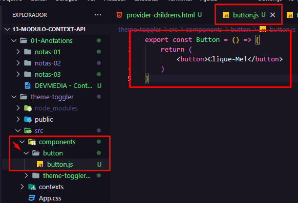
- Importando o novo componente de botão:
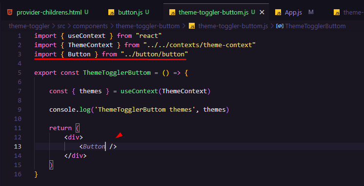
OBS: O Button precisa ser mais genérico. Vamos então passar o 'Click-Me!' para as Props através do Operador Spread a seguir:
- Basicamente o Spread pega qualquer propriedade que eu passar dentro do componente e passa como uma Prop, deixando o botão muito mais genérico:
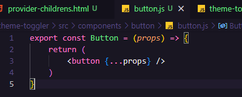
- Passando o conteúdo de Temas pra dentro do Button (que está dois niveis abaixo do Componente Pai):
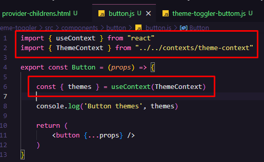
- Note que agora tanto o Primeiro Componente Filho quanto o Segundo, possuem os mesmos Temas apesar de ambos não terem esses Temas passados como Props por parâmetro pra dentro de si:
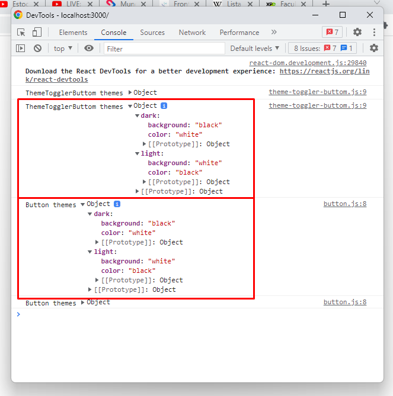